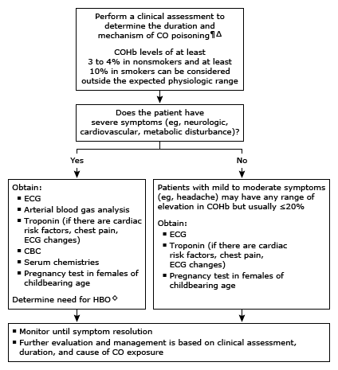

CO: carbon monoxide; COHb: carboxyhemoglobin; ECG: electrocardiogram; CBC: complete blood count; HBO: hyperbaric oxygen; SpO2: standard pulse oximetry.
* SpO2 cannot screen for CO exposure, as it does not differentiate COHb from oxyhemoglobin. Interpretation of a specific abnormal test result should be based upon the reference range reported by the laboratory.
¶ Life-saving interventions, including administration of high-flow oxygen by face mask, should not be delayed while awaiting test results. Refer to UpToDate table on rapid overview of CO poisoning.
Δ In addition to removing all patients from likely source of CO exposure, the source should be addressed so that the patient and possibly others do not return to the environment where they likely were exposed to ambient CO. Refer to UpToDate table on the causes of carbon monoxide poisoning.
◊ Obtain consultation with a medical toxicologist if needed. HBO therapy is indicated in the presence of any one of the following: